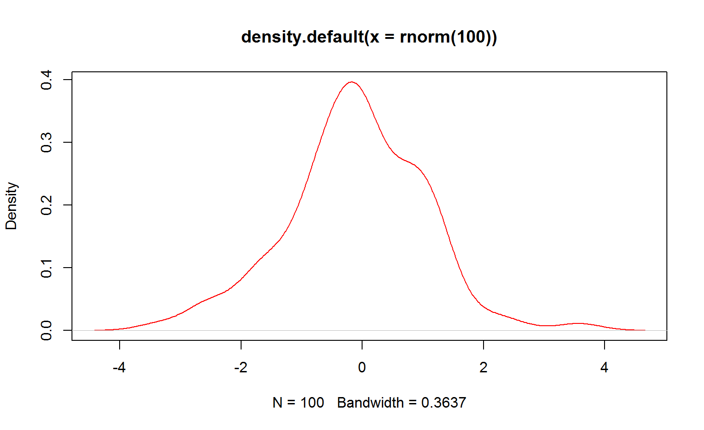

Alex Yaroslavtsev
plot(density(rnorm(100)), col = "red")
x = 5
x <- 5
assign("x", 5)function c()
x <- c(1, 3, 6, 7)(factors are not classic vector objects)
char <- c("8", "edge", "turn8k")
logic <- c(TRUE, FALSE, TRUE, FALSE)dynam <- c(8, "dds", TRUE)
dynam <- c(1, 0, 1, 1, TRUE)
dynam## [1] 1 0 1 1 1Priority Char->integer->Logic
x=function(arg1,arg2,…)
Invocation - function call
args:
Positional: log(x,base)
log(x, 10)## [1] 0.0000000 0.4771213 0.7781513 0.8450980Tagged: log(base=base,x)
log(base = 10, x)## [1] 0.0000000 0.4771213 0.7781513 0.8450980<, >, <=, >=, ==
x = 10
x < 5## [1] FALSEx > 5## [1] TRUEx == 10## [1] TRUE+, -, *, /, ^, sin(), cos(), sqrt(), log()
x^10## [1] 1e+10x = 10/(5 - 5)
x## [1] Infx <- c(2, 4, 5, 3, -4, 0)
x * 5## [1] 10 20 25 15 -20 0y <- c(5, 3)
x * y## [1] 10 12 25 9 -20 0x## [1] 2 4 5 3 -4 0z <- c(1, 2, 3, 4)
x * z## Warning in x * z: longer object length is not a multiple of shorter object
## length## [1] 2 8 15 12 -4 0length(x)## [1] 6log(), mean(), min(), max(), sum(), prod(), abs()
x <- c(3, 4, 6, -7, 8)
mean = sum(x)/length(x)
mean## [1] 2.8x = 2:10
y = 5:1
z = -5:10
w = -5:-10
x## [1] 2 3 4 5 6 7 8 9 10y## [1] 5 4 3 2 1z## [1] -5 -4 -3 -2 -1 0 1 2 3 4 5 6 7 8 9 10w## [1] -5 -6 -7 -8 -9 -10seq(from=,to=,by=)
z = seq(2, 5, 0.5)
x = seq(3, 9.1, 0.1)
y = seq(9, 3, -0.2)
length(x)## [1] 62length(y)## [1] 31x * y## [1] 27.00 27.28 27.52 27.72 27.88 28.00 28.08 28.12 28.12 28.08 28.00
## [12] 27.88 27.72 27.52 27.28 27.00 26.68 26.32 25.92 25.48 25.00 24.48
## [23] 23.92 23.32 22.68 22.00 21.28 20.52 19.72 18.88 18.00 54.90 54.56
## [34] 54.18 53.76 53.30 52.80 52.26 51.68 51.06 50.40 49.70 48.96 48.18
## [45] 47.36 46.50 45.60 44.66 43.68 42.66 41.60 40.50 39.36 38.18 36.96
## [56] 35.70 34.40 33.06 31.68 30.26 28.80 27.30rep(x, times=)
x = c("A", "B", "C")
rep(x, 4)## [1] "A" "B" "C" "A" "B" "C" "A" "B" "C" "A" "B" "C"mode(x)
x <- 1:10
y <- x <= -5
mode(x)## [1] "numeric"mode(y)## [1] "logical"mode(mode(x))## [1] "character"R is 1 based language
x = 1:20
x[2]## [1] 2x[0]## integer(0)x[5:9]## [1] 5 6 7 8 9x[c(3, 7, 8, 9, 20)]## [1] 3 7 8 9 20x[-19]## [1] 1 2 3 4 5 6 7 8 9 10 11 12 13 14 15 16 17 18 20x[-(1:6)]## [1] 7 8 9 10 11 12 13 14 15 16 17 18 19 20x[x > 10]## [1] 11 12 13 14 15 16 17 18 19 20x[TRUE]## [1] 1 2 3 4 5 6 7 8 9 10 11 12 13 14 15 16 17 18 19 20y = c(TRUE, FALSE)
x[y]## [1] 1 3 5 7 9 11 13 15 17 19vector <- c()
v2 <- c(TRUE, FALSE, TRUE, TRUE, FALSE, TRUE)
vector = c(v2, vector)
vector = c(F, vector)
x = 1:3
x = c(5, x)
x## [1] 5 1 2 3x = 1:5
names(x)## NULLnames(x) <- c("First", "Second", "Third", "Forth", "Fith")
names(x)## [1] "First" "Second" "Third" "Forth" "Fith"x["First"]## First
## 1length() names() mode()
log(3) == log(3, base = exp(1))## [1] TRUEx = seq(5, 100, 0.1)
x[length(x)]## [1] 100x <- c(-10, 2, 78, 34, -98, 23, 0, -8)
order(x)## [1] 5 1 8 7 2 6 4 3sort(x)## [1] -98 -10 -8 0 2 23 34 78sort(x) == x[order(x)]## [1] TRUE TRUE TRUE TRUE TRUE TRUE TRUE TRUEa <- seq(-8,10,.5)
a## [1] -8.0 -7.5 -7.0 -6.5 -6.0 -5.5 -5.0 -4.5 -4.0 -3.5 -3.0 -2.5 -2.0 -1.5
## [15] -1.0 -0.5 0.0 0.5 1.0 1.5 2.0 2.5 3.0 3.5 4.0 4.5 5.0 5.5
## [29] 6.0 6.5 7.0 7.5 8.0 8.5 9.0 9.5 10.0x = a[length(a):1]
x## [1] 10.0 9.5 9.0 8.5 8.0 7.5 7.0 6.5 6.0 5.5 5.0 4.5 4.0 3.5
## [15] 3.0 2.5 2.0 1.5 1.0 0.5 0.0 -0.5 -1.0 -1.5 -2.0 -2.5 -3.0 -3.5
## [29] -4.0 -4.5 -5.0 -5.5 -6.0 -6.5 -7.0 -7.5 -8.0y = c(a[1:round(length(a)/2)], 99, a[(round(length(a)/2) + 1):length(a)])x = 0:3
y = acos(cos(x))
x == y## [1] TRUE FALSE TRUE FALSEx = c(sin(10), log(5,8), log(3,exp(1)), log(38.6,10), cos(pi + 1), exp(1)^(cos(0)), atan(+Inf))
names(x) = c("sin(10)", "log8(5)", "ln3", "lg(38.6)", "cos(pi+1)", "e^cos(0)", "arctn(+Inf)");
sort(x)## sin(10) cos(pi+1) log8(5) ln3 arctn(+Inf) lg(38.6)
## -0.5440211 -0.5403023 0.7739760 1.0986123 1.5707963 1.5865873
## e^cos(0)
## 2.7182818A U B - conjunction
x = seq(-10,10,.01)x = seq(-10,10,.01)
y = x[(x > -10 & x < -3) | (x > 0 & x < 6 & x != 3)]
y## [1] -9.99 -9.98 -9.97 -9.96 -9.95 -9.94 -9.93 -9.92 -9.91 -9.90 -9.89
## [12] -9.88 -9.87 -9.86 -9.85 -9.84 -9.83 -9.82 -9.81 -9.80 -9.79 -9.78
## [23] -9.77 -9.76 -9.75 -9.74 -9.73 -9.72 -9.71 -9.70 -9.69 -9.68 -9.67
## [34] -9.66 -9.65 -9.64 -9.63 -9.62 -9.61 -9.60 -9.59 -9.58 -9.57 -9.56
## [45] -9.55 -9.54 -9.53 -9.52 -9.51 -9.50 -9.49 -9.48 -9.47 -9.46 -9.45
## [56] -9.44 -9.43 -9.42 -9.41 -9.40 -9.39 -9.38 -9.37 -9.36 -9.35 -9.34
## [67] -9.33 -9.32 -9.31 -9.30 -9.29 -9.28 -9.27 -9.26 -9.25 -9.24 -9.23
## [78] -9.22 -9.21 -9.20 -9.19 -9.18 -9.17 -9.16 -9.15 -9.14 -9.13 -9.12
## [89] -9.11 -9.10 -9.09 -9.08 -9.07 -9.06 -9.05 -9.04 -9.03 -9.02 -9.01
## [100] -9.00 -8.99 -8.98 -8.97 -8.96 -8.95 -8.94 -8.93 -8.92 -8.91 -8.90
## [111] -8.89 -8.88 -8.87 -8.86 -8.85 -8.84 -8.83 -8.82 -8.81 -8.80 -8.79
## [122] -8.78 -8.77 -8.76 -8.75 -8.74 -8.73 -8.72 -8.71 -8.70 -8.69 -8.68
## [133] -8.67 -8.66 -8.65 -8.64 -8.63 -8.62 -8.61 -8.60 -8.59 -8.58 -8.57
## [144] -8.56 -8.55 -8.54 -8.53 -8.52 -8.51 -8.50 -8.49 -8.48 -8.47 -8.46
## [155] -8.45 -8.44 -8.43 -8.42 -8.41 -8.40 -8.39 -8.38 -8.37 -8.36 -8.35
## [166] -8.34 -8.33 -8.32 -8.31 -8.30 -8.29 -8.28 -8.27 -8.26 -8.25 -8.24
## [177] -8.23 -8.22 -8.21 -8.20 -8.19 -8.18 -8.17 -8.16 -8.15 -8.14 -8.13
## [188] -8.12 -8.11 -8.10 -8.09 -8.08 -8.07 -8.06 -8.05 -8.04 -8.03 -8.02
## [199] -8.01 -8.00 -7.99 -7.98 -7.97 -7.96 -7.95 -7.94 -7.93 -7.92 -7.91
## [210] -7.90 -7.89 -7.88 -7.87 -7.86 -7.85 -7.84 -7.83 -7.82 -7.81 -7.80
## [221] -7.79 -7.78 -7.77 -7.76 -7.75 -7.74 -7.73 -7.72 -7.71 -7.70 -7.69
## [232] -7.68 -7.67 -7.66 -7.65 -7.64 -7.63 -7.62 -7.61 -7.60 -7.59 -7.58
## [243] -7.57 -7.56 -7.55 -7.54 -7.53 -7.52 -7.51 -7.50 -7.49 -7.48 -7.47
## [254] -7.46 -7.45 -7.44 -7.43 -7.42 -7.41 -7.40 -7.39 -7.38 -7.37 -7.36
## [265] -7.35 -7.34 -7.33 -7.32 -7.31 -7.30 -7.29 -7.28 -7.27 -7.26 -7.25
## [276] -7.24 -7.23 -7.22 -7.21 -7.20 -7.19 -7.18 -7.17 -7.16 -7.15 -7.14
## [287] -7.13 -7.12 -7.11 -7.10 -7.09 -7.08 -7.07 -7.06 -7.05 -7.04 -7.03
## [298] -7.02 -7.01 -7.00 -6.99 -6.98 -6.97 -6.96 -6.95 -6.94 -6.93 -6.92
## [309] -6.91 -6.90 -6.89 -6.88 -6.87 -6.86 -6.85 -6.84 -6.83 -6.82 -6.81
## [320] -6.80 -6.79 -6.78 -6.77 -6.76 -6.75 -6.74 -6.73 -6.72 -6.71 -6.70
## [331] -6.69 -6.68 -6.67 -6.66 -6.65 -6.64 -6.63 -6.62 -6.61 -6.60 -6.59
## [342] -6.58 -6.57 -6.56 -6.55 -6.54 -6.53 -6.52 -6.51 -6.50 -6.49 -6.48
## [353] -6.47 -6.46 -6.45 -6.44 -6.43 -6.42 -6.41 -6.40 -6.39 -6.38 -6.37
## [364] -6.36 -6.35 -6.34 -6.33 -6.32 -6.31 -6.30 -6.29 -6.28 -6.27 -6.26
## [375] -6.25 -6.24 -6.23 -6.22 -6.21 -6.20 -6.19 -6.18 -6.17 -6.16 -6.15
## [386] -6.14 -6.13 -6.12 -6.11 -6.10 -6.09 -6.08 -6.07 -6.06 -6.05 -6.04
## [397] -6.03 -6.02 -6.01 -6.00 -5.99 -5.98 -5.97 -5.96 -5.95 -5.94 -5.93
## [408] -5.92 -5.91 -5.90 -5.89 -5.88 -5.87 -5.86 -5.85 -5.84 -5.83 -5.82
## [419] -5.81 -5.80 -5.79 -5.78 -5.77 -5.76 -5.75 -5.74 -5.73 -5.72 -5.71
## [430] -5.70 -5.69 -5.68 -5.67 -5.66 -5.65 -5.64 -5.63 -5.62 -5.61 -5.60
## [441] -5.59 -5.58 -5.57 -5.56 -5.55 -5.54 -5.53 -5.52 -5.51 -5.50 -5.49
## [452] -5.48 -5.47 -5.46 -5.45 -5.44 -5.43 -5.42 -5.41 -5.40 -5.39 -5.38
## [463] -5.37 -5.36 -5.35 -5.34 -5.33 -5.32 -5.31 -5.30 -5.29 -5.28 -5.27
## [474] -5.26 -5.25 -5.24 -5.23 -5.22 -5.21 -5.20 -5.19 -5.18 -5.17 -5.16
## [485] -5.15 -5.14 -5.13 -5.12 -5.11 -5.10 -5.09 -5.08 -5.07 -5.06 -5.05
## [496] -5.04 -5.03 -5.02 -5.01 -5.00 -4.99 -4.98 -4.97 -4.96 -4.95 -4.94
## [507] -4.93 -4.92 -4.91 -4.90 -4.89 -4.88 -4.87 -4.86 -4.85 -4.84 -4.83
## [518] -4.82 -4.81 -4.80 -4.79 -4.78 -4.77 -4.76 -4.75 -4.74 -4.73 -4.72
## [529] -4.71 -4.70 -4.69 -4.68 -4.67 -4.66 -4.65 -4.64 -4.63 -4.62 -4.61
## [540] -4.60 -4.59 -4.58 -4.57 -4.56 -4.55 -4.54 -4.53 -4.52 -4.51 -4.50
## [551] -4.49 -4.48 -4.47 -4.46 -4.45 -4.44 -4.43 -4.42 -4.41 -4.40 -4.39
## [562] -4.38 -4.37 -4.36 -4.35 -4.34 -4.33 -4.32 -4.31 -4.30 -4.29 -4.28
## [573] -4.27 -4.26 -4.25 -4.24 -4.23 -4.22 -4.21 -4.20 -4.19 -4.18 -4.17
## [584] -4.16 -4.15 -4.14 -4.13 -4.12 -4.11 -4.10 -4.09 -4.08 -4.07 -4.06
## [595] -4.05 -4.04 -4.03 -4.02 -4.01 -4.00 -3.99 -3.98 -3.97 -3.96 -3.95
## [606] -3.94 -3.93 -3.92 -3.91 -3.90 -3.89 -3.88 -3.87 -3.86 -3.85 -3.84
## [617] -3.83 -3.82 -3.81 -3.80 -3.79 -3.78 -3.77 -3.76 -3.75 -3.74 -3.73
## [628] -3.72 -3.71 -3.70 -3.69 -3.68 -3.67 -3.66 -3.65 -3.64 -3.63 -3.62
## [639] -3.61 -3.60 -3.59 -3.58 -3.57 -3.56 -3.55 -3.54 -3.53 -3.52 -3.51
## [650] -3.50 -3.49 -3.48 -3.47 -3.46 -3.45 -3.44 -3.43 -3.42 -3.41 -3.40
## [661] -3.39 -3.38 -3.37 -3.36 -3.35 -3.34 -3.33 -3.32 -3.31 -3.30 -3.29
## [672] -3.28 -3.27 -3.26 -3.25 -3.24 -3.23 -3.22 -3.21 -3.20 -3.19 -3.18
## [683] -3.17 -3.16 -3.15 -3.14 -3.13 -3.12 -3.11 -3.10 -3.09 -3.08 -3.07
## [694] -3.06 -3.05 -3.04 -3.03 -3.02 -3.01 0.01 0.02 0.03 0.04 0.05
## [705] 0.06 0.07 0.08 0.09 0.10 0.11 0.12 0.13 0.14 0.15 0.16
## [716] 0.17 0.18 0.19 0.20 0.21 0.22 0.23 0.24 0.25 0.26 0.27
## [727] 0.28 0.29 0.30 0.31 0.32 0.33 0.34 0.35 0.36 0.37 0.38
## [738] 0.39 0.40 0.41 0.42 0.43 0.44 0.45 0.46 0.47 0.48 0.49
## [749] 0.50 0.51 0.52 0.53 0.54 0.55 0.56 0.57 0.58 0.59 0.60
## [760] 0.61 0.62 0.63 0.64 0.65 0.66 0.67 0.68 0.69 0.70 0.71
## [771] 0.72 0.73 0.74 0.75 0.76 0.77 0.78 0.79 0.80 0.81 0.82
## [782] 0.83 0.84 0.85 0.86 0.87 0.88 0.89 0.90 0.91 0.92 0.93
## [793] 0.94 0.95 0.96 0.97 0.98 0.99 1.00 1.01 1.02 1.03 1.04
## [804] 1.05 1.06 1.07 1.08 1.09 1.10 1.11 1.12 1.13 1.14 1.15
## [815] 1.16 1.17 1.18 1.19 1.20 1.21 1.22 1.23 1.24 1.25 1.26
## [826] 1.27 1.28 1.29 1.30 1.31 1.32 1.33 1.34 1.35 1.36 1.37
## [837] 1.38 1.39 1.40 1.41 1.42 1.43 1.44 1.45 1.46 1.47 1.48
## [848] 1.49 1.50 1.51 1.52 1.53 1.54 1.55 1.56 1.57 1.58 1.59
## [859] 1.60 1.61 1.62 1.63 1.64 1.65 1.66 1.67 1.68 1.69 1.70
## [870] 1.71 1.72 1.73 1.74 1.75 1.76 1.77 1.78 1.79 1.80 1.81
## [881] 1.82 1.83 1.84 1.85 1.86 1.87 1.88 1.89 1.90 1.91 1.92
## [892] 1.93 1.94 1.95 1.96 1.97 1.98 1.99 2.00 2.01 2.02 2.03
## [903] 2.04 2.05 2.06 2.07 2.08 2.09 2.10 2.11 2.12 2.13 2.14
## [914] 2.15 2.16 2.17 2.18 2.19 2.20 2.21 2.22 2.23 2.24 2.25
## [925] 2.26 2.27 2.28 2.29 2.30 2.31 2.32 2.33 2.34 2.35 2.36
## [936] 2.37 2.38 2.39 2.40 2.41 2.42 2.43 2.44 2.45 2.46 2.47
## [947] 2.48 2.49 2.50 2.51 2.52 2.53 2.54 2.55 2.56 2.57 2.58
## [958] 2.59 2.60 2.61 2.62 2.63 2.64 2.65 2.66 2.67 2.68 2.69
## [969] 2.70 2.71 2.72 2.73 2.74 2.75 2.76 2.77 2.78 2.79 2.80
## [980] 2.81 2.82 2.83 2.84 2.85 2.86 2.87 2.88 2.89 2.90 2.91
## [991] 2.92 2.93 2.94 2.95 2.96 2.97 2.98 2.99 3.01 3.02 3.03
## [1002] 3.04 3.05 3.06 3.07 3.08 3.09 3.10 3.11 3.12 3.13 3.14
## [1013] 3.15 3.16 3.17 3.18 3.19 3.20 3.21 3.22 3.23 3.24 3.25
## [1024] 3.26 3.27 3.28 3.29 3.30 3.31 3.32 3.33 3.34 3.35 3.36
## [1035] 3.37 3.38 3.39 3.40 3.41 3.42 3.43 3.44 3.45 3.46 3.47
## [1046] 3.48 3.49 3.50 3.51 3.52 3.53 3.54 3.55 3.56 3.57 3.58
## [1057] 3.59 3.60 3.61 3.62 3.63 3.64 3.65 3.66 3.67 3.68 3.69
## [1068] 3.70 3.71 3.72 3.73 3.74 3.75 3.76 3.77 3.78 3.79 3.80
## [1079] 3.81 3.82 3.83 3.84 3.85 3.86 3.87 3.88 3.89 3.90 3.91
## [1090] 3.92 3.93 3.94 3.95 3.96 3.97 3.98 3.99 4.00 4.01 4.02
## [1101] 4.03 4.04 4.05 4.06 4.07 4.08 4.09 4.10 4.11 4.12 4.13
## [1112] 4.14 4.15 4.16 4.17 4.18 4.19 4.20 4.21 4.22 4.23 4.24
## [1123] 4.25 4.26 4.27 4.28 4.29 4.30 4.31 4.32 4.33 4.34 4.35
## [1134] 4.36 4.37 4.38 4.39 4.40 4.41 4.42 4.43 4.44 4.45 4.46
## [1145] 4.47 4.48 4.49 4.50 4.51 4.52 4.53 4.54 4.55 4.56 4.57
## [1156] 4.58 4.59 4.60 4.61 4.62 4.63 4.64 4.65 4.66 4.67 4.68
## [1167] 4.69 4.70 4.71 4.72 4.73 4.74 4.75 4.76 4.77 4.78 4.79
## [1178] 4.80 4.81 4.82 4.83 4.84 4.85 4.86 4.87 4.88 4.89 4.90
## [1189] 4.91 4.92 4.93 4.94 4.95 4.96 4.97 4.98 4.99 5.00 5.01
## [1200] 5.02 5.03 5.04 5.05 5.06 5.07 5.08 5.09 5.10 5.11 5.12
## [1211] 5.13 5.14 5.15 5.16 5.17 5.18 5.19 5.20 5.21 5.22 5.23
## [1222] 5.24 5.25 5.26 5.27 5.28 5.29 5.30 5.31 5.32 5.33 5.34
## [1233] 5.35 5.36 5.37 5.38 5.39 5.40 5.41 5.42 5.43 5.44 5.45
## [1244] 5.46 5.47 5.48 5.49 5.50 5.51 5.52 5.53 5.54 5.55 5.56
## [1255] 5.57 5.58 5.59 5.60 5.61 5.62 5.63 5.64 5.65 5.66 5.67
## [1266] 5.68 5.69 5.70 5.71 5.72 5.73 5.74 5.75 5.76 5.77 5.78
## [1277] 5.79 5.80 5.81 5.82 5.83 5.84 5.85 5.86 5.87 5.88 5.89
## [1288] 5.90 5.91 5.92 5.93 5.94 5.95 5.96 5.97 5.98 5.99x = factor(“Mouse”)
f = c(rep("mouse", 3), rep("rat", 2), rep("fly", 11))
f = rep(c("mouse", "rat", "fly"), c(3, 2, 11))
x = factor(f)
summary(x)## fly mouse rat
## 11 3 2summary(f)## Length Class Mode
## 16 character charactersummary(1:10)## Min. 1st Qu. Median Mean 3rd Qu. Max.
## 1.00 3.25 5.50 5.50 7.75 10.00summary(1:10)[4]## Mean
## 5.5dna=factor(rep(c("T","G","C","A"),c(16,38,6,10)))dna=factor(rep(c("T","G","C","A"),c(16,38,6,10)))
ratio=summary(dna)/sum(summary(dna))
ratio## A C G T
## 0.14285714 0.08571429 0.54285714 0.22857143sample:
dna## [1] T T T T T T T T T T T T T T T T G G G G G G G G G G G G G G G G G G G
## [36] G G G G G G G G G G G G G G G G G G G C C C C C C A A A A A A A A A A
## Levels: A C G Tsample(dna)## [1] G C G G G T G T A G G G T A C G G C G T G G T G G G G G G G G T G G G
## [36] A T T A G G G C A G G A G A A G T G T T C T G G A T G A T T G C T G G
## Levels: A C G T#sample(dna,size = 84, replace = FALSE) - will give errorsample(dna,size = 84, replace = TRUE)## [1] G G T G T G G C T G T C G C G T C G G C G A G T G T G A G C G G G C G
## [36] G G C T C G C G G G A G A A G G G G G T T G G A T G T T G C G A G G G
## [71] G T A G C G G A G G A T G T
## Levels: A C G Tsampledna = sample(c("A","T","G","C"), size = 10000, replace = TRUE)
ratio = summary(factor(sampledna)) / length(sampledna)
ratio2 = summary(factor(dna)) / length(dna)ratio## A C G T
## 0.2500 0.2484 0.2489 0.2527ratio2## A C G T
## 0.14285714 0.08571429 0.54285714 0.22857143x=1:10
y=6:14
union(x,y)## [1] 1 2 3 4 5 6 7 8 9 10 11 12 13 14intersect(x,y)## [1] 6 7 8 9 10setdiff(x,y)## [1] 1 2 3 4 5setdiff(y,x)## [1] 11 12 13 14rm(list=ls())cumsum(1:10)## [1] 1 3 6 10 15 21 28 36 45 55dna2=sample(c("A","T","G","G","G","C"), size=3826513,replace=TRUE)
ratio=summary(factor(dna2))/length(dna2)
ratio## A C G T
## 0.1666951 0.1668088 0.4997414 0.1667547dna2=sample(c("A","T","G","C"), size=3826513,prob=c(.5/3,.5/3,.5,.5/3),replace=TRUE)
ratio=summary(factor(dna2))/length(dna2)
ratio## A C G T
## 0.1662532 0.1670022 0.4998870 0.1668577iris[iris$Species==c("setosa","virginica"),]## Sepal.Length Sepal.Width Petal.Length Petal.Width Species
## 1 5.1 3.5 1.4 0.2 setosa
## 3 4.7 3.2 1.3 0.2 setosa
## 5 5.0 3.6 1.4 0.2 setosa
## 7 4.6 3.4 1.4 0.3 setosa
## 9 4.4 2.9 1.4 0.2 setosa
## 11 5.4 3.7 1.5 0.2 setosa
## 13 4.8 3.0 1.4 0.1 setosa
## 15 5.8 4.0 1.2 0.2 setosa
## 17 5.4 3.9 1.3 0.4 setosa
## 19 5.7 3.8 1.7 0.3 setosa
## 21 5.4 3.4 1.7 0.2 setosa
## 23 4.6 3.6 1.0 0.2 setosa
## 25 4.8 3.4 1.9 0.2 setosa
## 27 5.0 3.4 1.6 0.4 setosa
## 29 5.2 3.4 1.4 0.2 setosa
## 31 4.8 3.1 1.6 0.2 setosa
## 33 5.2 4.1 1.5 0.1 setosa
## 35 4.9 3.1 1.5 0.2 setosa
## 37 5.5 3.5 1.3 0.2 setosa
## 39 4.4 3.0 1.3 0.2 setosa
## 41 5.0 3.5 1.3 0.3 setosa
## 43 4.4 3.2 1.3 0.2 setosa
## 45 5.1 3.8 1.9 0.4 setosa
## 47 5.1 3.8 1.6 0.2 setosa
## 49 5.3 3.7 1.5 0.2 setosa
## 102 5.8 2.7 5.1 1.9 virginica
## 104 6.3 2.9 5.6 1.8 virginica
## 106 7.6 3.0 6.6 2.1 virginica
## 108 7.3 2.9 6.3 1.8 virginica
## 110 7.2 3.6 6.1 2.5 virginica
## 112 6.4 2.7 5.3 1.9 virginica
## 114 5.7 2.5 5.0 2.0 virginica
## 116 6.4 3.2 5.3 2.3 virginica
## 118 7.7 3.8 6.7 2.2 virginica
## 120 6.0 2.2 5.0 1.5 virginica
## 122 5.6 2.8 4.9 2.0 virginica
## 124 6.3 2.7 4.9 1.8 virginica
## 126 7.2 3.2 6.0 1.8 virginica
## 128 6.1 3.0 4.9 1.8 virginica
## 130 7.2 3.0 5.8 1.6 virginica
## 132 7.9 3.8 6.4 2.0 virginica
## 134 6.3 2.8 5.1 1.5 virginica
## 136 7.7 3.0 6.1 2.3 virginica
## 138 6.4 3.1 5.5 1.8 virginica
## 140 6.9 3.1 5.4 2.1 virginica
## 142 6.9 3.1 5.1 2.3 virginica
## 144 6.8 3.2 5.9 2.3 virginica
## 146 6.7 3.0 5.2 2.3 virginica
## 148 6.5 3.0 5.2 2.0 virginica
## 150 5.9 3.0 5.1 1.8 virginicairis[iris$Species=="setosa" | iris$Species=="virginica",c("Petal.Length","Species")]## Petal.Length Species
## 1 1.4 setosa
## 2 1.4 setosa
## 3 1.3 setosa
## 4 1.5 setosa
## 5 1.4 setosa
## 6 1.7 setosa
## 7 1.4 setosa
## 8 1.5 setosa
## 9 1.4 setosa
## 10 1.5 setosa
## 11 1.5 setosa
## 12 1.6 setosa
## 13 1.4 setosa
## 14 1.1 setosa
## 15 1.2 setosa
## 16 1.5 setosa
## 17 1.3 setosa
## 18 1.4 setosa
## 19 1.7 setosa
## 20 1.5 setosa
## 21 1.7 setosa
## 22 1.5 setosa
## 23 1.0 setosa
## 24 1.7 setosa
## 25 1.9 setosa
## 26 1.6 setosa
## 27 1.6 setosa
## 28 1.5 setosa
## 29 1.4 setosa
## 30 1.6 setosa
## 31 1.6 setosa
## 32 1.5 setosa
## 33 1.5 setosa
## 34 1.4 setosa
## 35 1.5 setosa
## 36 1.2 setosa
## 37 1.3 setosa
## 38 1.4 setosa
## 39 1.3 setosa
## 40 1.5 setosa
## 41 1.3 setosa
## 42 1.3 setosa
## 43 1.3 setosa
## 44 1.6 setosa
## 45 1.9 setosa
## 46 1.4 setosa
## 47 1.6 setosa
## 48 1.4 setosa
## 49 1.5 setosa
## 50 1.4 setosa
## 101 6.0 virginica
## 102 5.1 virginica
## 103 5.9 virginica
## 104 5.6 virginica
## 105 5.8 virginica
## 106 6.6 virginica
## 107 4.5 virginica
## 108 6.3 virginica
## 109 5.8 virginica
## 110 6.1 virginica
## 111 5.1 virginica
## 112 5.3 virginica
## 113 5.5 virginica
## 114 5.0 virginica
## 115 5.1 virginica
## 116 5.3 virginica
## 117 5.5 virginica
## 118 6.7 virginica
## 119 6.9 virginica
## 120 5.0 virginica
## 121 5.7 virginica
## 122 4.9 virginica
## 123 6.7 virginica
## 124 4.9 virginica
## 125 5.7 virginica
## 126 6.0 virginica
## 127 4.8 virginica
## 128 4.9 virginica
## 129 5.6 virginica
## 130 5.8 virginica
## 131 6.1 virginica
## 132 6.4 virginica
## 133 5.6 virginica
## 134 5.1 virginica
## 135 5.6 virginica
## 136 6.1 virginica
## 137 5.6 virginica
## 138 5.5 virginica
## 139 4.8 virginica
## 140 5.4 virginica
## 141 5.6 virginica
## 142 5.1 virginica
## 143 5.1 virginica
## 144 5.9 virginica
## 145 5.7 virginica
## 146 5.2 virginica
## 147 5.0 virginica
## 148 5.2 virginica
## 149 5.4 virginica
## 150 5.1 virginica| Type | Function | Options |
|---|---|---|
| Vector | c() | [i] -position or logic |
| Factor | factor() | [] - position or logic |
| Matrix | matrix() | [row,col]; [i] - positional logical |
| List | list() | [[i]], $ |
| dataframe | data.frame() | [,] $ |
summary(factor(iris[(iris$Petal.Length>2 & iris$Petal.Length<6),"Species" ]))## versicolor virginica
## 50 39my_func = function(p)
{
x=p^2
y=x^3
print("result")
return(c(x,y))
}
my_func(2)## [1] "result"## [1] 4 64mathses = function(p,q)
{
result = c(p+q,log(p+q,10),exp(p+q))
names(result) = c("summ", "log","exp")
return(result)
}
mathses(2,3)## summ log exp
## 5.00000 0.69897 148.41316mf = function(p)
{
if (p>0)
{
x=log(p)
return(x)
}
else
{
return(NULL)
}
}
mf(-1)## NULLmyfactorial = function(p)
{
if (p>0 & p%%1==0)
{return(gamma(p+1))}
else
{return(NULL)}
}
myfactorial(5)## [1] 120 myfactorial = function(p)
{
if (p>0 & p%%1==0)
{return(gamma(p+1))}
else
{return(NULL)}
}